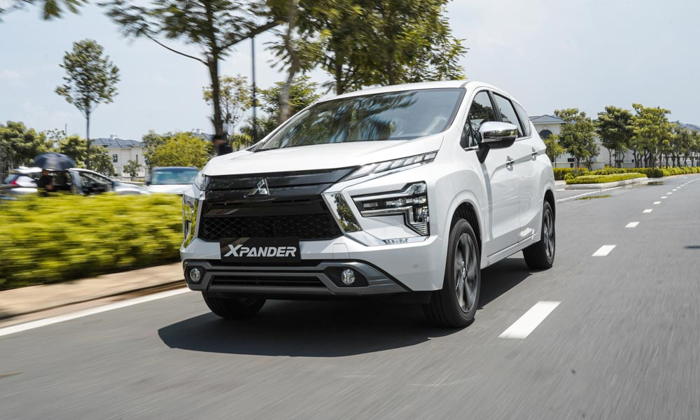

CHO THUÊ XE Ô TÔ DU LỊCH 7 CHỖ GIÁ RẺ TẠI TPHCM
Cho thuê xe ô tô du lịch 7 chỗ có thể là một lựa chọn tuyệt vời cho chuyến đi hay hành trình sắp tới của bạn, mang đến sự thoải mái, thuận tiện và an toàn cho tất cả mọi người. Nó cũng là một lựa chọn tiết kiệm chi phí và linh hoạt, phù hợp cho nhiều dịp khác nhau. Vì vậy, nếu bạn đang lên kế hoạch cho một chuyến đi với một nhóm đông thành viên, hãy cân nhắc thuê một chiếc xe 7 chỗ để có trải nghiệm khó quên.
Dịch vụ cho thuê xe 7 chỗ tại công ty thuê xe
Tại công ty cho thuê xe của Trí Tài, chúng tôi chuyên cung cấp các giải pháp vận chuyển hàng đầu cho khách hàng của mình. Đội ngũ xe 7 chỗ của chúng tôi là giải pháp hoàn hảo cho bất kỳ ai đang tìm kiếm phương tiện rộng rãi và thoải mái để chở gia đình, bạn bè hoặc đồng nghiệp. Trong bài viết này, chúng tôi sẽ giải thích lý do tại sao bạn nên cân nhắc thuê xe 7 chỗ của công ty chúng tôi.
1. Thoải mái và rộng rãi
Xe ô tô 7 chỗ của Trí Tài được thiết kế để mang lại sự thoải mái và không gian tối đa cho hành khách. Những phương tiện này có chỗ để chân, khoảng không trên đầu và khoang hành lý rộng rãi, đảm bảo bạn có thể đi lại thoải mái với tất cả đồ đạc của mình. Cho dù bạn đang đi nghỉ mát cùng gia đình hay đi công tác cùng đồng nghiệp, những chiếc xe 7 chỗ của Trí Tài sẽ luôn là sự lựa chọn hoàn hảo cho mọi nhu cầu vận chuyển của bạn.
2. Tối ưu chi phí
Thuê xe ô tô 7 chỗ của công ty chúng tôi tiết kiệm chi phí so với các phương tiện di chuyển khác, đặc biệt nếu bạn đi cùng một nhóm người. Với những chiếc xe của Trí Tài, bạn có thể chia nhỏ chi phí thuê và tiết kiệm tiền cho chi phí vận chuyển. Ngoài ra, mức giá của chúng tôi cạnh tranh và chúng tôi cung cấp các tùy chọn cho thuê linh hoạt phục vụ cho nhu cầu cụ thể của bạn.
3. Thuận lợi
Thuê xe 7 chỗ của công ty chúng tôi rất tiện lợi, quý khách có thể đón và trả xe tại địa điểm tùy ý. Trí Tài cung cấp nhiều địa điểm đón và trả khách, bao gồm sân bay, nhà ga và khách sạn. Bạn cũng có thể chọn từ các khoảng thời gian thuê khác nhau, bao gồm thuê theo giờ, theo ngày và theo tuần, để phù hợp với nhu cầu cụ thể của bạn.
4. Đáng tin cậy
Tại công ty cho thuê xe của Trí Tài, chúng tôi tự hào cung cấp những chiếc xe đáng tin cậy và được bảo trì tốt cho khách hàng của mình. Tất cả các xe ô tô 7 chỗ của chúng tôi đều được kiểm tra bảo dưỡng định kỳ để đảm bảo chúng luôn ở trong tình trạng tốt nhất và có thể mang đến cho bạn một chuyến đi an toàn và thoải mái. Chúng tôi cũng cung cấp hỗ trợ bên đường trong trường hợp có bất kỳ sự cố bất ngờ nào trong thời gian thuê của bạn.
5. Linh hoạt
Xe ô tô 7 chỗ của Trí Tài rất linh hoạt và có thể được sử dụng cho các mục đích khác nhau, bao gồm các kỳ nghỉ gia đình, các chuyến công tác, du lịch theo nhóm, v.v. Chúng cũng lý tưởng cho các chuyến đi đường dài, vì chúng mang lại cảm giác lái thoải mái và có các tính năng như điều hòa không khí, định vị GPS và hệ thống giải trí giúp hành trình của bạn trở nên thú vị.
Liên hệ báo giá